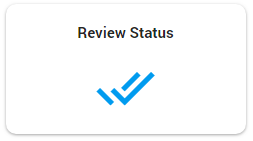

On the Home page, select Configuration.

Select Review Status.

Select a saved search and/or one or more tags and/or fields.
|
|
Note: The query may not contain a full text query, only tags and/or fields. |

Click Apply. All documents with the selected tags/defined fields will automatically receive the Reviewed status.